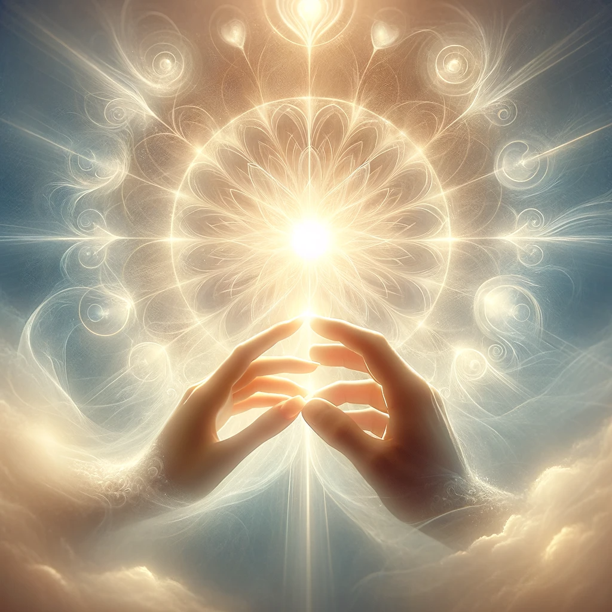

We all experience tragedy, whether it is a physical tragedy like pain or injury, a wordly tragedy such as stress or being pushed to your limits by work, family, etc. Or a spiritual tragedy, such as losing one that you love or being hurt by someone, especially someone that you care about.
Various spiritual beliefs, such as Buddhism, or even some views from Greeko/Roman paganism viewed the world as suffering, or that we lived in a fallen world compared to something greater.
Now I know that in Christian thought, God created a perfect world. Now I admit that there are different ways that people can of course interpret the Bible. There are many ways to understand different wholy texts.
Yet I believe that a "perfect world" can be subjective as to what it means to have a perfect world. A perfect world could be that the Universe was vast and ever expanding, or that the world was pure beauty, or that it's amazing as to how the world and humanity were even created.
And even if the world was "perfect" meaning without pain, it was never meant to last. We have free will meaning that God would never force anyone to do something because that's against the very point of existence.
I believe that to steal one's control over themselves for one's own sake is evil. Meanwhile, Love is to willingly give one's own control away for other's sake. I feel that Christ himself acknowledges that portion in Luke 9:24.
If you were told what to do, you couldn't decide between good and evil, and therefore even be held accountable for anything or even experience true freedom of thought.
But when we have the ability to do whatever we want, we can use that to hurt others. To steal, to murder, to harass, to abuse, to lie, or any other method of inflicting pain.
And I believe that while some suffering is organic (such as death, or diseases), I believe that many of our suffering is ironically caused by other people in some way or form. Either directly (like war) or indirectly by systems and technology that we have created (like this economy.)
I believe it's because of love.
If God or whatever divinities that exist are the true essence of love and compassion, and they gave birth to life and watched over it, then there's only one way that we could ever reach up to them.
By suffering, we learn to sympathize for others. We know the pain that another person went through, and so we then understand their motives and beliefs. That is known as being compassionate.
If we had everything we wanted just handed to us in a silver spoon, we wouldn't know gratitude, we wouldn't be able to appreciate things and be humble. If people couldn't die, we would have no strong urge to spend time with them before something happens to either one of us.
Suffering, or going through thick and thin, especially with others, makes us more attached, and more caring and compassionate. At least this is ideal, this is the best case scenario.
Some people, when hurt by the world become angry and so bitter. And my heart breaks for those people that aren't happy and aren't enduring this world. But it's not too late for them to have a change of heart, to change their quality of mind. I hope that they are given that much grace and even more.
Some people may say that "yes suffering can be good for growth", but I'm willing to take it a step further and say that we came here to suffer, and that you're going to suffer. That was the point in all of this.
It gives us more humility, understanding, love, and compassion. And that quality of heart, mind, and soul is the only chance of us making it to the divinities that exist.

Return to main page